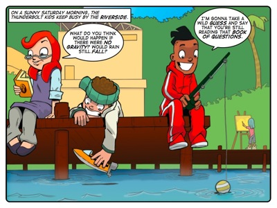
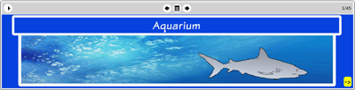

Story: Snakes Alive
Theme: Thinking with questions.
Synopsis
Sophie researches the mechanics of posing questions while the Thunderbolt Kids laze by the river. They are interrupted by a shower of fish from the sky and a crazed Lazlo who ascribes the strange turn in the weather to the imminent arrival of aliens. Sophie uses her new understanding of questions to try figure out what’s going on. Jojo recognises the fish and thus where they came from, as well as whom to ask for help. He phones Dr Roberts who tells the kids that the day’s strange events are caused by a waterspout.
Dr Roberts warns the Thunderbolt Kids to get everyone inside and away from the river. Lazlo’s deluded desire to find aliens forces Jojo to brave the now-dangerous rain of coconuts. Lazlo resist’s Jojo’s attempts at rescue until a coconut knocks him out. Jojo carries him through the deadly rain to safety.
This story is riddled with questions, from the first to the last panel. Sophie’s six questions halfway through the tale are rational tools to find the answer to the larger question: why are fish falling from the sky? Sophie starts at the beginning of the investigative process by asking simple questions that have answers that can be linked to other questions with more answers to yet more questions and so on.
Her approach contrasts strongly with Lazlo’s “Do you know what this means?” He jumps straight to the end of the thinking process and immediately decides that the answer to his question is “The Aliens are coming.” He has clearly jumped to the conclusion that appeals to him, not one that relies on the logical application of evidence to answer relevant questions.
Lazlo’s wrong-headed thinking stems from his failure to ask relevant questions and find examples from the real world that parallel his logic (or lack thereof).
Activity
This activity challenges learners to play the game, 20 Questions. The purpose of the activity is to allow learners to practice asking pointed questions for a specific purpose in a non-threatening environment.
Learners often struggle to think of questions to interrogate a topic because they battle to focus their busy minds on something specific. But the goal of 20 Questions is clear: work out who I am thinking about and do it by asking 20 questions or less. Another reason kids struggle to ask questions in class is that they're afraid that others may think less of them if they ask a question that is perceived as stupid. But because it is a game, 20 Questions cultivates a non-threatening atmosphere where learners find asking questions exciting.
In doing this activity we want learners to recognise that some questions are more helpful than others during the game. Asking broad questions early on such as, "Are you alive or dead?" and "Are you male or female?" are more helpful than asking, "Are you Nelson Mandela?" It doesn't take long at all for learners to realise this, which helps them to develop their question asking skills.

The eToys project: Aquarium
In this project Sophie shows learners how to build an aquarium in eToys. Sophie asks and answers questions throughout the process of construction. In this way she models the centrality of question-asking in analytical thinking. Learners write simple scripts for a range of sea creatures, creating an onscreen model of an aquarium. There is nothing particularly difficult or profound about this project. It is good example of placing learners in mathland.